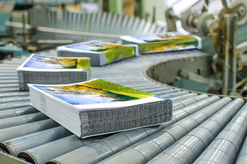

Verzamelen
Wat is Verzamelen?
Definitie
Verzamelen is een afwerkingstechniek waarbij meerdere pagina’s of katernen in een specifieke volgorde worden verzameld om een complete set te vormen. Dit proces is essentieel in de productie van bijvoorbeeld boeken, brochures, en andere meerbladige documenten, waar de volgorde van de pagina’s cruciaal is voor het eindresultaat.
Voordelen van Verzamelen
- Accurate Paginavolgorde: Zorgt ervoor dat de pagina’s in de juiste volgorde worden geplaatst, wat essentieel is voor een goed leesbare publicatie.
- Efficiëntie: Maakt het mogelijk om snel en nauwkeurig meerdere pagina’s te groeperen.
- Professionele Afwerking: Geeft het eindproduct een professionele uitstraling door de correcte samenstelling van het document.
Toepassingen van Verzamelen
Verzamelen wordt vaak gebruikt voor:
- Boeken: Om de verschillende katernen in de juiste volgorde te plaatsen.
- Brochures: Voor het samenstellen van meerbladige documenten in de juiste volgorde.
- Tijdschriften: Om alle pagina’s op de juiste manier te rangschikken voordat ze worden gebonden of geniet.
- Folders: Voor het correct ordenen van gevouwen pagina's in meerdelige folders.
Hoe Werkt Verzamelen?
Bij het verzamelen worden de pagina’s of katernen in een specifieke volgorde geplaatst, meestal door een verzamelmachine. Deze machines kunnen grote hoeveelheden papier snel en nauwkeurig verwerken, wat het productieproces van boeken, brochures en andere gedrukte materialen efficiënter maakt.
Belangrijke Overwegingen bij Verzamelen
- Paginavolgorde: Het is cruciaal om ervoor te zorgen dat de pagina’s in de juiste volgorde worden geplaatst om fouten in het eindproduct te voorkomen.
- Papiersoort: Verschillende papiersoorten kunnen invloed hebben op hoe goed de pagina’s verzameld worden, vooral als ze erg dun of dik zijn.
- Verzamelmethode: Handmatig verzamelen is mogelijk bij kleine oplages, maar machinaal verzamelen is efficiënter voor grotere oplages.